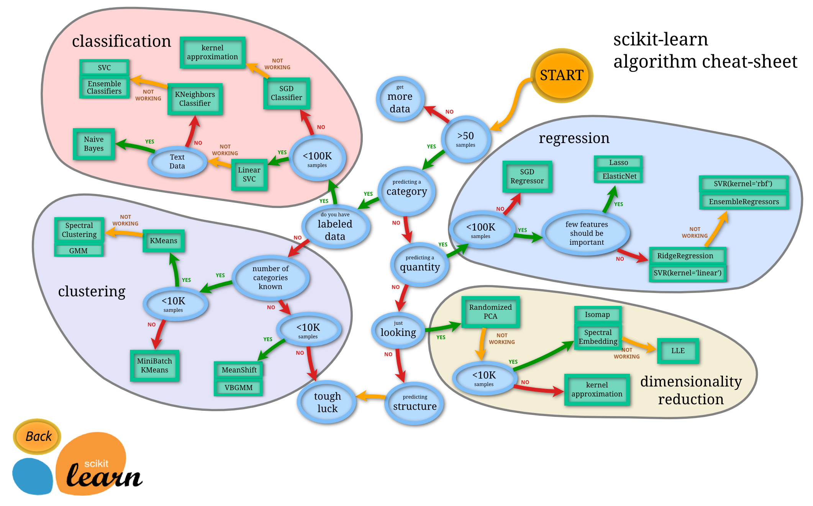
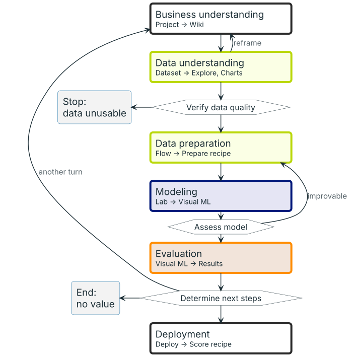
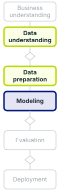

name: title layout: true class: cover --- count: false .section-mark.center[ ## From a business question to a first model ### CRISP-DM, the data, and a first model of credit risk <br /> Oscar Esteban <<code>oscar.esteban@hevs.ch</code>> <br /> EAD · Exploration avancée de données et intelligence décisionnelle · 16.10.2026 ] ??? This deck follows one business question, whether a bank should grant a credit, from its formulation to a first model. It covers three things: CRISP-DM, the process that structures a data-mining project; the data a bank holds on its past credits; and a first model of credit risk, trained in Dataiku during Hands-on 1. The ideas come mainly from chapters 2, 3 and 7 of Provost and Fawcett's *Data Science for Business* (2013), listed on slide 20, and from the CRISP-DM 1.0 guide (Chapman et al., 2000). Whether that first model is good enough for the bank is the question of the next deck. --- name: newsection layout: true .perma-sidebar[ <p class="rotate"> <a rel="license" href="http://creativecommons.org/licenses/by/4.0/"><img alt="Creative Commons License" style="border-width:0; height: 20px; padding-top: 6px;" src="https://i.creativecommons.org/l/by/4.0/88x31.png" /></a> <span style="padding-left: 10px; font-weight: 600;">From a business question to a first model (16.10.2026)</span> </p> ] --- # This morning builds a first model, then judges it .cards.cols-3.vcenter[ .card.accent[ .kicker[16.10 · morning, first] ### A first model The process, the data, a hands-on. ] .card[ .kicker[16.10 · morning, then] ### Evaluating a classifier Metrics, thresholds, costs. ] .card[ .kicker[16.10 · 11:30 and 13:15] ### Model selection Cross-validation, four algorithms. ] .card.muted[ .kicker[16.10 · 15:10] ### Beyond binary classification Several classes, wine quality. ] .card.muted[ .kicker[23.10] ### Deep learning Images, pretrained networks. ] .card.muted[ .kicker[23.10] ### Text and time Text mining, time series. ] ] ??? The day of 16.10 runs four decks and 23.10 continues, all about supervised learning, the kind of model that slides 2 and 3 introduce. This deck comes first: the process, the data, and a hands-on in which groups train a first model with Dataiku's default settings and note what its result screens show. The second deck, *Evaluating a classifier*, starts from the three notes brought back at the end of this deck (slide 19): the metrics that count a classifier's errors, the threshold that turns a probability into a decision, and the costs that choose it. The third, *Model selection and cross-validation*, asks how far a score can be trusted, and compares four algorithms on the same folds; it runs on after lunch. Cross-validation estimates how a model does on new cases by holding out each part of the data in turn while the model learns from the rest (James et al., 2021, p. 203). The fourth deck, *Beyond binary classification*, ends the day with targets of several categories. On 23.10, deep learning applies the same reasoning to images, then to text and to time series. --- class: stepwise-svg # The three layer system (1977) .boxed-content.center[ <object type="image/svg+xml" data="images/systemic-model.svg" style="width: 70%; margin-top: 28pt; pointer-events: none;"></object> ] .footnote[Recap of week 1. J.-L. Le Moigne (1977), *La théorie du système général*; drawing after J. Bucki and Y. Pesqueux (1994), Fig. 2.] ??? This slide recalls a model of the firm met in week 1. Le Moigne (1977) describes every organisation as three systems: an operations system that carries out the activity, a steering system that decides, and between them an information system that serves as the organisation's memory. Bucki and Pesqueux (1994, p. 4) give the same three roles, the information system being the means of communication between the two others; in their Figure 2 (p. 5), redrawn here, every exchange passes through it. The build adds the flows: the inputs and outputs of the operations system, decisions and instructions going down, recorded activity and indicators going up, and information from outside the firm. A model learned from the stored data sends a score up to the steering system, which still takes the decision. Le Moigne counts information, with matter and energy, among what a system can process (1977); in a bank the operating flow is information: applications come in, credits granted or refused go out. A model learned from past cases is supervised learning, the subject of 16.10 and 23.10 and of the next slide. --- class: stepwise-svg # Supervised learning mines the past to predict The focus of 16.10 and 23.10: models learned from past cases whose outcome is known. .boxed-content.center[ <object type="image/svg+xml" data="images/mining-vs-using.svg" style="width: 92%; padding-top: 12pt; pointer-events: none;"></object> ] .footnote[.book[<i class="fa-solid fa-book-open"></i> After Provost & Fawcett (2013), Fig. 2-1, p. 26], redrawn with height and sex. The two curves are illustrative, not measured.] ??? The slide redraws Provost and Fawcett's Figure 2-1 (2013, p. 26), which keeps two activities apart: mining data to build a model, and using it (p. 25). In the upper half, past cases whose class is known, here height and sex, are mined into a model. The problem is supervised: a target is defined, and "there must be data on the target" (Provost & Fawcett, 2013, p. 24, verbatim). In the lower half, the same model receives a new case whose class is unknown: "The model predicts both the class value and the probability" (Provost & Fawcett, 2013, p. 26, verbatim), a task called class probability estimation (p. 25). The curves are invented for teaching, not measured: normal curves with means of 164 and 178 cm and a standard deviation of 7 cm. They cross at about 171 cm, the threshold above which male is the more probable class. If men and women are equally common, a person of 174 cm is male with a probability of about 0.70, so three such cases in ten would still be female. Where to cut is a decision, taken up for credit on slide 17. --- class: stepwise-svg # Data mining & statistical learning .dm-quote[ > Data mining is the process of extracting and finding patterns in massive data sets involving methods at the intersection of machine learning, statistics, and database systems.<sup>[1]</sup> .src[[1] SIGKDD (2006-04-30). "[Data Mining Curriculum: A Proposal](https://www.kdd.org/curriculum/index.html)". kdd.org (Association for Computing Machinery). Archived from the original on 2013-10-14. Retrieved 2014-01-27.] ] .boxed-content.center[ <object type="image/svg+xml" data="images/kdd-to-crisp.svg" style="width: 96%; padding-top: 14pt; pointer-events: none;"></object> ] .footnote[Quote: Wikipedia, *Data mining* (revision of 9 September 2026), .lic[CC BY-SA 4.0]. KDD: after U. Fayyad, G. Piatetsky-Shapiro and P. Smyth (1996), Fig. 1; their text lists nine steps, the two ends included (pp. 41 to 42).] ??? The definition on the slide is the opening sentence of Wikipedia's article "Data mining", which cites the ACM SIGKDD curriculum proposal of 2006. The proposal itself, which gives Knowledge Discovery in Data (KDD) as another name for data mining, speaks of a science, not a process: "the science of extracting useful knowledge" (ACM SIGKDD, 2006, verbatim) from huge data repositories. Fayyad et al. (1996) separate the two terms: KDD is the whole process of discovering useful knowledge from data, and data mining one step in it, applying algorithms that extract patterns (p. 39). Their Figure 1, the drawing's top row, runs from data to knowledge in five steps (p. 41); their text adds understanding the domain and the goal before them, and acting on the knowledge after them (p. 42). The build sets the CRISP-DM phases under the KDD steps, then adds those two ends, which belong to the business. Statistical learning, a subfield of statistics, covers much the same ground: tools for understanding data, supervised when a model predicts an output from inputs, unsupervised when there is no output (James et al., 2021, pp. 1 and 6). Among analytic techniques, data mining stands out because it "focuses on the automated search for knowledge, patterns, or regularities from data" (Provost & Fawcett, 2013, p. 35, verbatim). --- # Data mining + business .pull-left[ <img src="images/crisp-dm-cycle.png" style="width: 92%;" alt="The CRISP-DM cycle: six phases around the data, inside a circle of arrows" /> ] .pull-right[ <br /> **CRISP-DM**: the *Cross-Industry Standard Process for Data Mining*. **Business understanding** comes first: the question, before any data. **Deployment** closes the cycle: the *use* of the model, the half of slide 3 that KDD left out. The **inner arrows** are the frequent moves, not a fixed order; the **outer circle** starts the next turn. ] .footnote[Diagram: Kenneth Jensen, based on IBM SPSS Modeler CRISP-DM documentation, .lic[CC BY-SA 3.0, via Wikimedia Commons]. Model: P. Chapman et al. (2000), *CRISP-DM 1.0*, Fig. 2, p. 13. <br /> .book[<i class="fa-solid fa-book-open"></i> Provost & Fawcett (2013), Fig. 2-2, p. 27]] ??? CRISP-DM, the Cross-Industry Standard Process for Data Mining, was conceived in 1996 by DaimlerChrysler, SPSS and NCR as a non-proprietary, freely available process model for any industry, tool and application (Chapman et al., 2000, p. 3). Provost and Fawcett build their book on it (2013, pp. 19 and 27, Fig. 2-2). Business understanding comes first: the project's objectives, seen from the business, are turned into a data-mining problem and a plan (Chapman et al., 2000, p. 13). Deployment comes last: the results are "put into real use in order to realize some return on investment" (Provost & Fawcett, 2013, p. 32, verbatim), from a simple report to live models that score new cases (Chapman et al., 2000, p. 14). Deployment is the lower half of Figure 2-1 on slide 3, the model in use; the KDD figure on slide 4 stops at knowledge, and only its text names acting on it (Fayyad et al., 1996, p. 42). In the cycle, the inner arrows mark the most frequent dependencies between phases, not a fixed order; the outer circle says that a deployed solution raises new, more focused business questions (Chapman et al., 2000, p. 13). --- class: stepwise-svg # Drawn as a line, the cycle shows where to stop .pull-left[ <object type="image/svg+xml" data="images/crisp-linear.svg" style="height: 540px; pointer-events: none;"></object> ] .pull-right[ <br /> Three gates, each a task of CRISP-DM 1.0: - **Verify data quality** (task 2.4): can these data answer the question? - **Assess model** (task 4.4): is it worth preparing the data again? - **Determine next steps** (task 5.3): deploy, turn again, or stop. The last step of the build names the Dataiku screen of each phase. ] .footnote[Phases and tasks: P. Chapman et al. (2000), *CRISP-DM 1.0*, pp. 13 to 31. Gates adapted from D. Genoud's 2025 flowchart.] ??? As a line, the CRISP-DM cycle shows three points where a project decides whether to go on, each a task of CRISP-DM 1.0 (gates adapted from D. Genoud, 2025). Verify data quality (task 2.4) asks whether the data cover the cases needed, how common errors are and where values are missing (Chapman et al., 2000, p. 22); data that cannot answer the question stop the project, and data understanding can also send it back to reframe the question (Provost & Fawcett, 2013, p. 29). Assess model (task 4.4) ranks the models against the success criteria and repeats building and assessing until the best is found (Chapman et al., 2000, p. 29); a technique's needs often send the work back to data preparation (p. 14). Determine next steps (task 5.3) chooses between deployment, another turn and a new project (p. 31), or ends a project that brings no value. "It is possible to deploy results immediately after data mining but this is inadvisable" (Provost & Fawcett, 2013, p. 31, verbatim). The last step names each phase's Dataiku screen, from Project → Wiki for business understanding to Deploy → Score recipe for deployment. The line keeps the inner loops but drops the outer circle of slide 5. --- class: stepwise-svg # Mapping CRISP-DM and the ML canvas .pull-left[ <object type="image/svg+xml" data="images/crisp-linear-canvas.svg" style="height: 540px; pointer-events: none;"></object> ] .pull-right[ <br /> <object type="image/svg+xml" data="images/ml-canvas-course.svg" style="width: 94%; margin-right: 6%; pointer-events: none;"></object> ] .footnote[Canvas: L. Dorard, *The Machine Learning Canvas* v1.1 (ownml.co), .lic[CC BY-SA 4.0], with the regions drawn on it in week 1 (cropped). Flowchart colours: those regions. Which boxes each phase fills is this course's reading, not Dorard's.] ??? The flowchart of slide 6 returns in the colours of the four regions drawn on the Machine Learning Canvas in week 1: goal (the value proposition: what, why, who), learn (data sources, data collection, features, building models), predict (prediction task, decisions, making predictions, impact simulation) and evaluate (monitoring) (Dorard, 2015). Each phase takes the colour of the region it mostly fills, and as it appears, a frame marks its boxes on the canvas. Business understanding frames the value proposition. Data understanding frames data sources and data collection; data preparation frames the features. Modeling frames building models with the four predict boxes: what is predicted, which decision it serves, when predictions are made, and what correct and incorrect decisions are worth. Evaluation frames monitoring. Deployment returns to the value proposition, because "the process often returns to the Business Understanding phase" (Provost & Fawcett, 2013, p. 34, verbatim). This mapping is a reading made for this course, not Dorard's, and some boxes straddle phases: data collection and building models also ask how the system is updated once in production. Slide 12 fills the canvas for the bank in this order. --- # Choosing the right model <img class="phase-thumb" src="images/phase-mo.svg" alt="The CRISP-DM phases, modeling lit" /> .beside-thumb[ A key activity of modeling: CRISP-DM task 4.1, *Select modeling technique* (Chapman et al. 2000, p. 27). <p></p> ] .footnote[*Choosing the right estimator* (ml_map.png), scikit-learn 1.5.0 documentation, © 2007-2024 the scikit-learn developers, .lic[BSD 3-Clause]; first drawn by A. Mueller (2013).] ??? CRISP-DM opens the modeling phase with task 4.1: select the specific technique, such as a decision tree or a neural network, and record the assumptions it makes about the data (Chapman et al., 2000, pp. 27 to 28). The scikit-learn map starts from the task: a category or a quantity to predict, with labelled data or without (scikit-learn developers, *Choosing the right estimator*). The textbook draws the same line: "Regression involves a numeric target while classification involves a categorical (often binary) target" (Provost & Fawcett, 2013, p. 25, verbatim). On 16.10, credit risk (South German Credit) is a labelled category, good or bad: binary classification, the path slide 17 follows. The map's "NOT WORKING" arrows assume a way to tell whether a model works: evaluating a classifier and selecting among models, the next two decks. The wine quality grade is ordered, so it can be treated as classes (multi-class classification) or as a number (regression); the original study chose regression to keep the order (Cortez et al., 2009). Image classification follows the classification path, but the map holds no deep learning. On 23.10, sentiment is classification on the map's text-data branch. Forecasting a time series predicts a quantity, but the map asks nothing about time and offers no forecasting method. --- class: stepwise-svg # CRISP-DM: nested iterative cycles .col-wide[ <object type="image/svg+xml" data="images/nested-cycles.svg" style="width: 100%; pointer-events: none;"></object> ] .col-narrow[ <br /><br /> .step-4[ > iteration is the rule rather than the exception .book[<i class="fa-solid fa-book-open"></i> Provost & Fawcett (2013), p. 27] A first turn that does not solve the problem is not a failure: the next one knows more. A data-mining project is closer to research than to engineering (p. 34). SENSIMED took years of turns. ] ] .footnote[.book[<i class="fa-solid fa-book-open"></i> After Provost & Fawcett (2013), pp. 27, 28 and 34.] Cycle and inner loops: P. Chapman et al. (2000), *CRISP-DM 1.0*, Fig. 2, p. 13.] ??? The line of knowledge discovery in databases (KDD) from slide 4 runs from data to knowledge without coming back (after Fayyad et al., 1996, Fig. 1). CRISP-DM closes it into a cycle: after deployment, the next turn starts. Inside the cycle, arrows lead back from data understanding to business understanding and from modeling to data preparation, the most important and frequent dependencies, not a fixed order (Chapman et al., 2000, p. 13). The dashed shortcut from evaluation to business understanding is taken when results are not good enough to deploy; a project should be able to return from any stage to any earlier one (Provost & Fawcett, 2013, p. 34). The textbook reads the diagram as "cycles within a cycle, rather than as a simple linear process" (Provost & Fawcett, 2013, p. 28, verbatim). On the page of the slide's quote, a pass that leaves the problem unsolved is generally not a failure, since the team then knows much more (p. 27). For management, data mining is "an exploratory undertaking closer to research and development than it is to engineering" (Provost & Fawcett, 2013, p. 34, verbatim): pilots and throwaway prototypes buy information before an expensive commitment (pp. 34 to 35). The "NOT WORKING" arrows of slide 8 say the same of models. Slide 10 shows years of such turns. --- class: stepwise-svg # SENSIMED took years of turns to aid diagnosis .boxed-content.center[ <object type="image/svg+xml" data="images/sensimed-timeline.svg" style="width: 100%; padding-top: 6pt; pointer-events: none;"></object> ] .footnote[Above the arrow, the record: CTI project 17325.1; FDA, 4 March 2016; K. Martin et al. (2018), *Am. J. Ophthalmol.* 194:46 to 53. Below it, the stages and pictures as D. Genoud's team presented them (*Warm-up*, EAD, 2025, p. 7).] ??? SENSIMED, a Lausanne firm spun off from EPFL in 2003, makes a contact lens whose sensor records small changes in the eye's volume over up to 24 hours (Startupticker, 2019; FDA, 2016). Above the arrow is the documented record. From 2014 to 2016, HES-SO Valais-Wallis, with HEIA-FR, built a machine learning platform for these 24-hour profiles, aimed at predicting how glaucoma progresses (CTI project 17325.1). In March 2016, the US FDA allowed its marketing for a narrower use, timing eye-pressure checks, not as a diagnostic tool (FDA, 2016). In 2018, an evaluation asked whether the lens helps tell glaucoma from healthy eyes. Its measure, the AUC, is the probability that a model ranks a random positive case above a random negative one: guessing gives 0.5 (Provost & Fawcett, 2013, pp. 216 and 219). The lens alone reached 0.61, with an interval that includes 0.5; eye pressure reached 0.68, and both together 0.76: the lens adds to pressure rather than replacing it (Martin et al., 2018). Below the arrow are the stages and pictures as D. Genoud's team presented them in 2025 (Genoud, 2025, p. 7); the record does not document them. Each turn changed the question: "the results of a given step may change the fundamental understanding of the problem" (Provost & Fawcett, 2013, p. 34, verbatim). --- class: stepwise-svg # Human-in-the-loop .board[ <p></p> <div class="rowcard goal step-1" style="top: 28px;"><b>Business understanding</b>: formulate the problem, what to predict and for which decision</div> <div class="rowcard learn step-2" style="top: 100px;"><b>Data understanding</b>: judge what each data source costs and what it is worth</div> <div class="rowcard learn step-3" style="top: 221px;"><b>Data preparation</b>: define the variables, and spot those that leak the answer</div> <div class="rowcard evaluate step-4" style="top: 387px;"><b>Evaluation</b>: check the business goal, not only the model; get the stakeholders to sign off</div> <div class="rowcard goal step-5" style="top: 507px;"><b>Deployment</b>: have the model rebuilt for production by engineers</div> ] .footnote[.book[<i class="fa-solid fa-book-open"></i> Provost & Fawcett (2013), pp. 28 to 33.]] ??? The coloured flowchart of slide 7 returns, with a card beside each phase where people, not tools, make the call. Some steps of the process are automated, while "others mostly require an analyst’s creativity, business knowledge, and common sense" (Provost & Fawcett, 2013, p. 19, verbatim). Business understanding casts the business problem as one or more data-mining problems and works out how the model will be used (p. 28). Data understanding weighs what each data source costs against what it is worth (p. 28). Data preparation defines the variables and looks for leaks, variables recorded in the history but unknown when the decision is made (p. 30). Evaluation checks the business goal, not only the model, and the stakeholders sign off (pp. 31 to 32). Deployment usually means recoding the model for production by a development team, best involved early: "Your model is not what the data scientists design, it’s what the engineers build." (Provost & Fawcett, 2013, p. 33, verbatim). Modeling has no card: it is where most science and technology apply (p. 31), and the hands-on of slide 18 runs it on Dataiku's defaults. Slide 12 makes the first of these calls for the bank. --- class: stepwise-svg # The bank's canvas: the decision before the data <img class="phase-thumb" src="images/phase-bu.svg" alt="The CRISP-DM phases, business understanding lit" /> .beside-thumb[ <div class="ml-canvas"> <div class="pt predict"><h4>PREDICTION TASK</h4><p class="step-4">Will this credit go bad? Two classes, and a probability for each application.</p></div> <div class="dec predict"><h4>DECISIONS</h4><p class="step-4">Grant or refuse the application.</p></div> <div class="vp goal"><h4>VALUE PROPOSITION</h4><p class="step-1">The credit committee refuses fewer good customers and grants fewer credits that go bad.</p></div> <div class="col learn"><h4>DATA COLLECTION</h4><p class="step-2">Each credit's outcome is known only when it ends, repaid or not.</p></div> <div class="src learn"><h4>DATA SOURCES</h4><p class="step-2">The bank's past credits: the application, the accounts, how each credit ended.</p></div> <div class="imp predict"><h4>IMPACT SIMULATION</h4><p class="step-4">Price the two errors: next slide.</p></div> <div class="mak predict"><h4>MAKING PREDICTIONS</h4><p class="step-4">For each application, before the committee decides.</p></div> <div class="bld learn"><h4>BUILDING MODELS</h4><p class="step-4">Learned from the past credits, again as new outcomes arrive.</p></div> <div class="fea learn"><h4>FEATURES</h4><p class="step-3">What the bank knows at the application: accounts, duration, purpose, amount, savings, age, ...</p></div> <div class="mon evaluate"><h4>MONITORING</h4><p class="step-5">Count the granted credits that go bad, as they end; whether a refused applicant would have repaid is never seen.</p></div> </div> ] .footnote[Canvas: after L. Dorard, *The Machine Learning Canvas* v1.1 (ownml.co), .lic[CC BY-SA 4.0], filled for the bank in the order of the phases on slide 7.] ??? The bank's case starts in business understanding: the canvas is filled before any data are opened, in the order of the phases on slide 7, since "the design team should think carefully about the use scenario" (Provost & Fawcett, 2013, p. 28, verbatim). The value proposition comes first: the credit committee refuses fewer good customers and grants fewer credits that go bad. Then the data: past credits, whose outcome is known only when each credit ends, the wait that Dorard's prompts ask about (Dorard, 2015). The features are what the bank knows at the application, the inputs available at prediction time, which keeps leaks out (Dorard, 2015; Provost & Fawcett, 2013, p. 30). The predict boxes follow: will the credit go bad, answered as a class with its probability, that is, class probability estimation (p. 25); grant or refuse; a prediction for each application before the committee decides; models rebuilt as outcomes arrive. Impact simulation asks what each correct and incorrect decision is worth, and "the business values often need to be acquired from other sources" (Provost & Fawcett, 2013, p. 194, verbatim): slide 13 prices the two errors. Monitoring counts the credits that go bad as they end; whether a refused applicant would have repaid is never observed, a gap slide 14 finds in the data. --- class: stepwise-svg # Two errors, two prices <img class="phase-thumb" src="images/phase-bu.svg" alt="The CRISP-DM phases, business understanding lit" /> .beside-thumb[ <object type="image/svg+xml" data="images/expected-value.svg" style="width: 100%; padding-top: 6pt; pointer-events: none;"></object> Granting a credit that goes bad costs more than refusing a good customer. How much more is a business figure, not a data figure. ] .footnote[.book[<i class="fa-solid fa-book-open"></i> After Provost & Fawcett (2013), Fig. 7-2, p. 197], redrawn for a credit decision, with rows and columns swapped to match the next deck; costs: pp. 194 to 203.] ??? Slide 12 left one box of the canvas open: price the two errors. The frame is the expected value calculation (Provost & Fawcett, 2013, pp. 194 to 200), in three steps. From the data: a model learned on part of the past credits decides on the rest, the test credits, whose outcome is known. Refused, was bad: a loss stopped in time. Granted, went bad: capital lent and not repaid. Refused, was good: a good customer turned away. Granted, was good: a credit repaid with interest. Each cell's count divided by the number of test credits is a rate, an estimated probability (p. 198). From the business: a cost per credit for each cell. The two correct decisions cost nothing; each error has its own price, the capital lost on a bad credit granted and the interest forgone on a good customer refused. "While the probabilities can be estimated from data, the costs and benefits often cannot." (Provost & Fawcett, 2013, p. 199, verbatim) They are fixed in business understanding (p. 196), often only as ranges (p. 199). A sum of money is counted in one cell only: putting a bad credit's capital both as a loss avoided and as a loss suffered would count it twice (p. 203). Rates times costs, added up, give the expected cost per application; the book computes an expected profit the same way (p. 200). The book puts the decision in the rows (p. 189); here the rows are the outcome. The next deck puts numbers on the two prices. --- class: stepwise-svg # The data: what one row knows <img class="phase-thumb" src="images/phase-du.svg" alt="The CRISP-DM phases, data understanding lit" /> .beside-thumb.terms[ <table> <tr><th>status</th><th>duration</th><th>purpose</th><th>amount</th><th>savings</th><th>age</th><th>...</th><th class="tgt">credit_risk</th></tr> <tr><td>no checking account</td><td>18</td><td>car (used)</td><td>1049</td><td>unknown or none</td><td>21</td><td>...</td><td class="tgt">good</td></tr> <tr><td>no checking account</td><td>9</td><td>others</td><td>2799</td><td>unknown or none</td><td>36</td><td>...</td><td class="tgt">good</td></tr> <tr><td>below 0 DM</td><td>12</td><td>retraining</td><td>841</td><td>below 100 DM</td><td>23</td><td>...</td><td class="tgt">good</td></tr> <tr><td>below 0 DM</td><td>36</td><td>domestic appliances</td><td>2384</td><td>unknown or none</td><td>33</td><td>...</td><td class="tgt">bad</td></tr> <tr><td>no checking account</td><td>18</td><td>others</td><td>1216</td><td>unknown or none</td><td>23</td><td>...</td><td class="tgt">bad</td></tr> </table> <div class="legend step-1"> <div><b>A row, an instance</b>: one credit the bank granted.</div> <div><b>A column, an attribute</b>: what the bank knew when it decided.</div> <div><b>The target</b>: <code>credit_risk</code>, known only once the credit ended.</div> </div> <div class="facts step-2"> <div><span class="num">1,000</span>credits from a south German bank, 1973 to 1975, with 20 attributes.</div> <div><span class="num">30%</span>bad, by design: in the bank's portfolio, about 5% went bad.</div> <div><span class="num">0</span>refused applicants: the data hold only credits the bank granted.</div> </div> ] .footnote[Rows 1, 2, 3, 23 and 46 of the course file. U. Grömping (2019), *South German Credit Data: Correcting a Widely Used Data Set*, Report 4/2019, Beuth Hochschule für Technik Berlin; UCI Machine Learning Repository, dataset 573, .lic[CC BY 4.0]. .book[<i class="fa-solid fa-book-open"></i> Terms: Provost & Fawcett (2013), pp. 45 to 46.]] ??? The deck moves to data understanding. Each row is an instance, "a historical customer who had been given credit" (Provost & Fawcett, 2013, p. 46, verbatim); each column is an attribute; the target, `credit_risk`, is the value to predict, unknown when the bank decides (pp. 44 to 46). The 1,000 credits were granted from 1973 to 1975 by a regional bank in southern Germany. Bad credits were oversampled on purpose: 30% here, about 5% in the bank's portfolio. Every debtor had passed the bank's checks: refused applicants are absent, so a model learns only from people the bank already accepted (Grömping, 2019). Results measured on a rebalanced sample change on the real mix (Provost & Fawcett, 2013, p. 191), and "evaluation should use the original, realistic population" (Provost & Fawcett, 2013, p. 207, verbatim). Published in 1994 as "Statlog German Credit", the file came with a code table that mixed up the categories of eight columns and made implausible facts look true: 963 of the 1,000 debtors appeared as foreign workers; 37 were. U. Grömping traced the data back and in 2019 published a corrected code table and file, South German Credit (Grömping, 2019); the course file comes from its UCI record, dataset 573. Checking what the columns mean is the data-quality gate of slide 6. --- class: stepwise-svg # Each column has a type <img class="phase-thumb" src="images/phase-du.svg" alt="The CRISP-DM phases, data understanding lit" /> .beside-thumb[ <div class="types step-1"> <div><b>Numbers<span class="n">3</span></b> <code>duration</code> <code>amount</code> <code>age</code> <p>Months, Deutsche Mark, years: they can be compared and added.</p></div> <div><b>Ordered bands<span class="n">6</span></b> <code>employment_duration</code> <code>installment_rate</code> <code>present_residence</code> <span class="nb"><code>number_credits</code><span class="rej step-2">✕ number</span></span> <span class="nb"><code>property</code><span class="rej step-2">✕ text</span></span> <code>job</code> <p>Numbers cut into bands, or ranked levels: an order, but no arithmetic.</p></div> <div><b>Categories<span class="n">8</span></b> <span class="nb"><code>status</code><span class="rej step-2">✕ text</span></span> <span class="nb"><code>credit_history</code><span class="rej step-2">✕ text</span></span> <code>purpose</code> <span class="nb"><code>savings</code><span class="rej step-2">✕ text</span></span> <span class="nb"><code>personal_status_sex</code><span class="rej step-2">✕ text</span></span> <code>other_debtors</code> <code>other_installment_plans</code> <code>housing</code> <p>Labels with no order between them.</p></div> <div><b>Yes or no<span class="n">3</span></b> <code>people_liable</code> <code>telephone</code> <code>foreign_worker</code> <p>Two values each.</p></div> </div> <p class="types-after step-1">The target, <code>credit_risk</code>, is a category with two values: the task is classification (slide 17).</p> <p class="types-after step-2"><b>What Dataiku read.</b> It guesses each type from the values, not from their meaning: five columns with long labels looked like free text, which its default leaves out. <b>16 / 21 features</b>, without <code>status</code>, the column most associated with the outcome. And <code>number_credits</code> passed for a number, though "2 to 3" is not one.</p> ] .footnote[Types: U. Grömping (2019), p. 4 and Appendix D, pp. 13 to 14. Describing the data: P. Chapman et al. (2000), *CRISP-DM 1.0*, p. 21. Dataiku DSS 15.0, course server, **Design → Features handling** and **Predicted data**, 15 October 2026.] ??? Describing the data is CRISP-DM's task 2.2: the format of the data, its quantity and the identity of each field (Chapman et al., 2000, p. 21). The type of a column matters because some techniques are "designed for symbolic and categorical data, while others handle only numeric values" (Provost & Fawcett, 2013, p. 30, verbatim). The four groups follow Grömping's description of each variable (Grömping, 2019, pp. 13 to 14). Three numbers keep their original units (months, Deutsche Mark, years), although the amounts went through a monotonic transformation of unknown form, so only their order is sure; other quantities survive only as discretized scores (p. 4), ranges of a number each treated as a category (Provost & Fawcett, 2013, p. 56). With property and job, two ranked levels, they form the ordered bands: an order, *unemployed* before *below 1 year*, but no known distance between levels. Categories are labels with no order at all. The target, `credit_risk`, is good or bad (Grömping, 2019, p. 14): a categorical target makes the task classification (Provost & Fawcett, 2013, p. 25), the path of slide 17. The second step of the build shows **Design → Features handling** in Dataiku DSS 15.0 (course server, 15 October 2026). Dataiku guesses a type from the values, not from their meaning: five columns with long labels looked like free text, which its default rejects. A sixth column is misread the other way. `number_credits` holds bands ("1", "2 to 3", "4 to 5", "6 or more"), and since 633 of the 1,000 rows read "1", Dataiku takes the column for a number, rescales it, and flags "2 to 3" as an invalid value (**Results → model → Predicted data**, 15 October 2026). The other categories and the bands get *Dummy encoding*, each level becoming its own yes-or-no column, one of the "techniques for converting categorical (symbolic) attributes into numerical values" (Provost & Fawcett, 2013, p. 82, verbatim), which drops the order of the bands. The numbers get *Avg-std rescaling*: centred on their average and divided by their standard deviation. The Results screen then reads 16 / 21 features, without `status`, the attribute most associated with the outcome: its share of bad credits runs from 12% for *200 DM or more or salary for at least 1 year* to 49% for *no checking account*. `credit_history`, second, is also out. Whether a conclusion holds for the data or only for the tool is the Referee's question on the sheet of slide 18; slide 16 sets the five columns back. --- class: stepwise-svg # Data preparation fits the data to the model <img class="phase-thumb" src="images/phase-dp.svg" alt="The CRISP-DM phases, data preparation lit" /> .beside-thumb[ <div class="prep"> <div class="step-1"><b>Format</b><span class="what">Change the form, not the meaning, for the tool.</span> Five columns of labels, and <code>number_credits</code>, become categories: <code>Design → Features handling</code>. The five alone lift Dataiku's SVM, ROC AUC: <span class="num">0.716 → 0.756</span>.</div> <div class="step-2"><b>Clean</b><span class="what">Missing values: drop the rows, fill them, or use a model that copes.</span> This file has none, yet 60% of the rows read <code>savings</code> = "unknown or no savings account": a gap can hide in a category.</div> <div class="step-3"><b>Select</b><span class="what">Keep the columns that carry signal.</span> If the file held phone numbers, the prefix, assigned by area, would hint at the region and bring much noise with it: drop the column.</div> <div class="step-4"><b>Construct</b><span class="what">Derive new values from the old ones.</span> Scale the numbers (Dataiku does it by default); turn ordered bands into ranks; smooth a time series, next Friday.</div> </div> ] .footnote[Tasks: P. Chapman et al. (2000), *CRISP-DM 1.0*, pp. 22 and 24 to 25. .book[<i class="fa-solid fa-book-open"></i> Provost & Fawcett (2013), pp. 30 and 156.] SVM: Dataiku DSS 15.0, course server, 14 and 15 October 2026.] ??? Data preparation goes along with data understanding: "the data are manipulated and converted into forms that yield better results" (Provost & Fawcett, 2013, p. 30, verbatim). CRISP-DM splits the phase into five tasks, select, clean, construct, integrate and format data (Chapman et al., 2000, pp. 24 to 25); the slide shows four of them on the credit file. Format changes the form of the data, not its meaning, as the modeling tool requires (Chapman et al., 2000, p. 25): the five columns rejected on slide 15, and `number_credits`, read as a number, become *Categorical*, which the sheet of slide 18 does before training (panel 2, step 2). Dataiku's support vector machine (SVM) went from an area under the receiver operating characteristics curve (ROC AUC) of 0.716 (± 0.051), with 16 of 21 features on 14 October 2026, to 0.756 (± 0.036) on 15 October, once the five columns were back (`number_credits` was still read as a number). The AUC, met on slide 10, is the probability that a randomly chosen bad credit is ranked above a randomly chosen good one (p. 219); the next deck builds it on its slides 12 and 13. The two ± ranges overlap, so two runs alone do not prove a gain; slide 5 of *Model selection and cross-validation* explains how far a ± can be trusted. The random forest used in the next decks, in scikit-learn, moves the same way under cross-validation: 0.700 without the five columns, 0.782 with them. Cleaning answers the data-quality check, which asks whether values are missing and how they are represented (Chapman et al., 2000, p. 22). Rows with gaps can be dropped, which wastes data, or the gaps filled, for instance with the column's mean (James et al., 2021, p. 508); some tree methods cope with gaps themselves (Hastie et al., 2009, p. 333). This file has no empty cell, yet 603 of its 1,000 rows read *unknown or no savings account*, and 36% of those credits went bad, against 30% overall: a gap stored as a category, and an informative one, like a weight missing because the patient was too heavy to climb on the scale (James et al., 2021, p. 509). Selecting features from background knowledge is "one of the main ways in which a data mining team injects domain knowledge" (Provost & Fawcett, 2013, p. 156, verbatim), and CRISP-DM asks for the reason behind each inclusion or exclusion (Chapman et al., 2000, p. 24). The phone-number example is hypothetical: the file holds none. A prefix, assigned by area, hints at the region, but a full number takes nearly one value per debtor, and an attribute with very many values can look informative without being predictive (Provost & Fawcett, 2013, p. 56). The real `telephone` says only whether a landline was registered in the debtor's name (Grömping, 2019, p. 14): 31% of credits went bad without one, 28% with one, a difference that is not statistically significant (p-value 0.28), and dropping the column leaves the forest's AUC unchanged (0.782 with it, 0.783 without). Construct derives new attributes or values from existing ones (Chapman et al., 2000, p. 24): numbers scaled so that they are comparable (Provost & Fawcett, 2013, p. 30), as Dataiku does by default; ordered bands turned into ranks, which keep the order that dummy encoding drops; a smoothed time series, next Friday. A ratio of amount to duration would mean little here, since the amounts went through an unknown transformation (Grömping, 2019, p. 4). Integrate data, the task not shown, combines several tables (Chapman et al., 2000, p. 25): this case is one file, but the week-1 exercise joined tables in Dataiku, and the group project's data come in several. With the data prepared, slide 17 turns to modeling. --- class: stepwise-svg # Credit scoring is classification, with a probability <img class="phase-thumb" src="images/phase-mo.svg" alt="The CRISP-DM phases, modeling lit" /> .beside-thumb[ <object type="image/svg+xml" data="images/mining-vs-using-credit.svg" style="width: 92%; padding-top: 4pt; pointer-events: none;"></object> On the map of slide 8: a category to predict, with labelled data, leads to **classification**. As with height and sex on slide 3, the model returns a probability; the bank still has to decide where to cut. ] .footnote[.book[<i class="fa-solid fa-book-open"></i> After Provost & Fawcett (2013), Fig. 2-1, p. 26; classification and class probability estimation, pp. 20 and 25.] The probability shown is an example.] ??? The figure repeats slide 3 on credit data, after Fig. 2-1 of the book (Provost & Fawcett, 2013, p. 26). Above, mining: past credits whose `credit_risk` is known go through data mining, in Dataiku the Lab's Visual ML, and give a model. Below, use: a new application goes through the same model, which returns the probability that the credit goes bad. The 0.34 is an example, not a result. Credit scoring is the book's own example: "Predictive models for credit scoring estimate the likelihood that a potential customer will default" (Provost & Fawcett, 2013, p. 45, verbatim). On the map of slide 8, a category to predict with labelled data leads to classification; with a probability as output it is still classification, named class probability estimation (p. 25). A probability is not yet a decision. On slide 3 a threshold of 171 cm turned heights into classes; here the bank chooses the probability above which it refuses. A cut at 50% looks natural and can be badly wrong: in the book's mailing example it targets almost nobody (pp. 195 to 196). The right cut depends on the prices of slide 13, the subject of the next deck. --- # Hands-on 1: explore, train, look, note <p></p> .beside-thumb[ .need[**The need.** The bank asks whether a model could help it decide. Before anyone explains how to judge a model, look at one.] <div class="moves"> <div><b>1. Explore</b>The credits, and how many went bad.<br /><code>Dataset → Explore, Charts</code></div> <div><b>2. Train</b>A first model: all 20 columns in, then Dataiku's defaults.<br /><code>Lab → AutoML Prediction</code></div> <div><b>3. Look</b>Its results: what does each screen show?<br /><code>Results → model</code></div> <div><b>4. Note</b>Three things you see, or cannot explain yet.<br />On the sheet</div> </div> <div class="roles"> <div><b>Driver</b>: works Dataiku; says what each screen shows before clicking on.</div> <div><b>Mapper</b>: writes the answers and places each note on a phase of the map.</div> <div><b>Referee</b>: checks each step, challenges each conclusion, speaks for the group.</div> </div> .need[Sheet *Hands-on 1*, panels 1 to 3. Groups of three. 40 minutes.] ] ??? The bank asks whether a model could help it decide. Before any slide on how to judge a model, each group looks at one (sheet *Hands-on 1*, panels 1 to 3). Each move has a purpose. Explore is data understanding: the share of bad credits and one column set against the target are what CRISP-DM's task *Explore data* asks for, the distribution of the target and the relations between attributes (Chapman et al., 2000, p. 21). Train keeps Dataiku's defaults but one, so that every later change starts from a known point. The exception: Dataiku leaves out five columns whose long labels it takes for free text (`status`, `credit_history`, `savings`, `personal_status_sex`, `property`), and the sheet sets them back as categories before training, the *Format* task of slide 16, together with `number_credits`, which Dataiku reads as a number. `status` and `credit_history` are the two columns most associated with the outcome, so the model would otherwise lose its best evidence. Which attributes enter the model is data preparation, CRISP-DM's task *Select data*, whose output is a rationale for each inclusion or exclusion (Chapman et al., 2000, p. 24); here the tool had made that choice silently, which is the Referee's question in practice. Look reads the result screens: how the models are ranked, the confusion matrix, the threshold, the columns that weigh most. Ranking models against evaluation criteria is CRISP-DM's task *Assess model* (Chapman et al., 2000, p. 29); here the criteria are Dataiku's defaults, not the bank's. Note keeps three things seen, or not yet explained, each placed on a phase of the map. The Driver says what a screen shows before clicking on; the Mapper writes the notes and places them; the Referee asks of each conclusion whether it holds for the data or only for the tool. --- # Bring back three notes for the next deck .board[ <div class="next" style="top: 387px;">← next deck</div> <div class="side"><ul> <li>The Mapper tags each note with the phase it belongs to.</li> <li>The Referee reads one note, and it goes on the map.</li> <li>The next deck starts from <b>evaluation</b>: is the model good enough for the bank?</li> </ul></div> ] ??? The flowchart of slide 11 becomes a board. The Mapper has tagged each note with a phase; the Referee reads one, and it goes on that phase. A note on the data, such as the share of bad credits, sits in data understanding; one on what a result screen shows, in modeling; one asking whether the model is good enough for the bank, in evaluation. The arrow marks where the next deck, *Evaluating a classifier*, starts. Evaluation in CRISP-DM asks whether the model meets the business objectives, beyond its accuracy (Chapman et al., 2000, p. 30). Chapter 7 of the book opens on this: data scientists and those they work with often neglect "connecting the results of mining data back to the goal of the undertaking" (Provost & Fawcett, 2013, p. 187, verbatim). Plain accuracy is "too simplistic for applications of data mining techniques to real business problems" (Provost & Fawcett, 2013, p. 189, verbatim), in part because it weighs the two errors of slide 13 alike (p. 193). The notes not yet explained are the questions the next deck answers. --- # Read the book this deck draws on .cards.cols-3.vcenter[ .card.accent[ .kicker[chapter 2] ### The process Business problems, the canonical tasks, CRISP-DM. ] .card[ .kicker[chapter 3] ### Predictive modelling Instances, attributes, targets; trees. ] .card[ .kicker[chapter 7] ### Decision analytic thinking Costs, the confusion matrix: the next deck. ] ] .admonition[ <i class="fa-solid fa-book-open"></i> F. Provost and T. Fawcett (2013), *Data Science for Business*, O'Reilly. Available to HES-SO students through the school's O'Reilly access. ] ??? *Data Science for Business* is written for business people who work with data scientists or manage data science projects, for developers, and for aspiring data scientists (Provost & Fawcett, 2013, p. xi). "This is not a book about algorithms" (Provost & Fawcett, 2013, p. xi, verbatim): it is organised around a few fundamental concepts, with little mathematics, and grew out of a class for MBA students at NYU Stern (p. xiii). Chapter 2 (from p. 19): the canonical tasks a business problem breaks into, classification and class probability estimation first; mining a model versus using it (slides 3 and 17); the CRISP-DM process (slides 5 to 11) and what data preparation covers (p. 30; slide 16). Chapter 3 (from p. 43): instances, attributes and the target, on a credit example (Fig. 3-1, p. 45; slide 14), then informative attributes and trees. Chapter 7 (from p. 187): what makes a good model; why accuracy misleads, the confusion matrix, unequal costs, expected value (slide 13) and baselines. The next deck starts there. The book is available to HES-SO students through the school's O'Reilly access. --- # References .refs[ - ACM SIGKDD (2006). *Data Mining Curriculum: A Proposal*. kdd.org, archived 14 October 2013. - Bucki, J. and Pesqueux, Y. (1994). Pour un renouveau du concept de système d'information. Working paper, HAL hal-00494174. - Chapman, P. et al. (2000). *CRISP-DM 1.0: Step-by-step data mining guide*. SPSS. - Cortez, P., Cerdeira, A., Almeida, F., Matos, T. and Reis, J. (2009). Modeling wine preferences by data mining from physicochemical properties. *Decision Support Systems* 47(4):547 to 553. - Dorard, L. *The Machine Learning Canvas*, v1.1. ownml.co. CC BY-SA 4.0. Regions as drawn in *Data science 1*, slides of the EAD module, week 1. - Fayyad, U., Piatetsky-Shapiro, G. and Smyth, P. (1996). From data mining to knowledge discovery in databases. *AI Magazine* 17(3):37 to 54. - FDA (2016). FDA permits marketing of device that senses optimal time to check patient's eye pressure. U.S. Food and Drug Administration, press announcement, 4 March 2016. - Genoud, D. (2025). Warm-up, slides of the EAD module, HES-SO Master. Example and pictures: SENSIMED projects. - Grömping, U. (2019). South German Credit Data: Correcting a Widely Used Data Set. Report 4/2019, Beuth Hochschule für Technik Berlin. Data: UCI Machine Learning Repository, dataset 573, doi:10.24432/C5QG88, CC BY 4.0. - HES-SO (2014). Sensimed: Glaucoma Prognostication Platform, CTI project 17325.1. People@HES-SO project record. - Hastie, T., Tibshirani, R. and Friedman, J. (2009). *The Elements of Statistical Learning*, 2nd ed. Springer. - James, G., Witten, D., Hastie, T. and Tibshirani, R. (2021). *An Introduction to Statistical Learning*, 2nd ed. Springer. - Jensen, K. (2012). CRISP-DM Process Diagram. Wikimedia Commons, CC BY-SA 3.0. - Le Moigne, J.-L. (1977). *La théorie du système général. Théorie de la modélisation*. PUF. - Martin, K. et al. (2018). Use of machine learning on contact lens sensor-derived parameters for the diagnosis of primary open-angle glaucoma. *American Journal of Ophthalmology* 194:46 to 53. - Provost, F. and Fawcett, T. (2013). *Data Science for Business*. O'Reilly. - scikit-learn developers. *Choosing the right estimator* (ml_map.png). scikit-learn 1.5.0 documentation, BSD 3-Clause. - Startupticker (2019). Japanese partner acquires Sensimed. startupticker.ch, November 2019. - Wikipedia contributors. *Data mining*, revision 1374109996 (9 September 2026). CC BY-SA 4.0. ] ??? The list is alphabetical. The primary sources are the original works behind each element of the deck: Le Moigne (1977) for the three-layer system, Fayyad et al. (1996) for the KDD process, Chapman et al. (2000) for CRISP-DM, Dorard for the Machine Learning Canvas, Grömping (2019) for the corrected credit data, Martin et al. (2018) for the published result of the SENSIMED case. The definition of data mining is quoted from Wikipedia, which cites the ACM SIGKDD proposal (2006). Provost and Fawcett (2013) is the course book, cited by page. James et al. (2021) and Hastie et al. (2009), two statistical-learning textbooks, ground the notes on missing values (slide 16). Work by others appears under open licences: the CRISP-DM diagram by K. Jensen (CC BY-SA 3.0), the scikit-learn map (BSD 3-Clause), the canvas and the Wikipedia definition (CC BY-SA 4.0), the credit data (CC BY 4.0). The drawings after Bucki and Pesqueux, Fayyad et al. and Provost and Fawcett are the deck's own, under the sidebar's CC BY 4.0 licence. The SENSIMED pictures belong to their authors and are shown with their credit, not under an open licence. --- .section-mark[ # End .large[ Next: *Evaluating a classifier* <i class="fa-solid fa-circle-left" style="opacity: 20%"></i> [<i class="fa-solid fa-home"></i>](#1) [<i class="fa-solid fa-circle-right"></i>](../02-model/index.html) ] ] ??? The morning continues with *Evaluating a classifier*, which starts from the notes brought back on slide 19. The arrows lead to the previous and the next deck of the day; the house returns to the first slide of this one. This deck is the first of the day, so it has no previous deck.